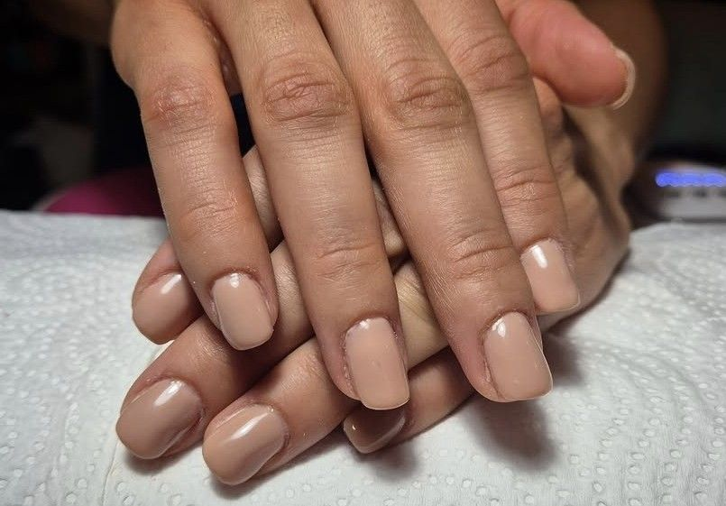
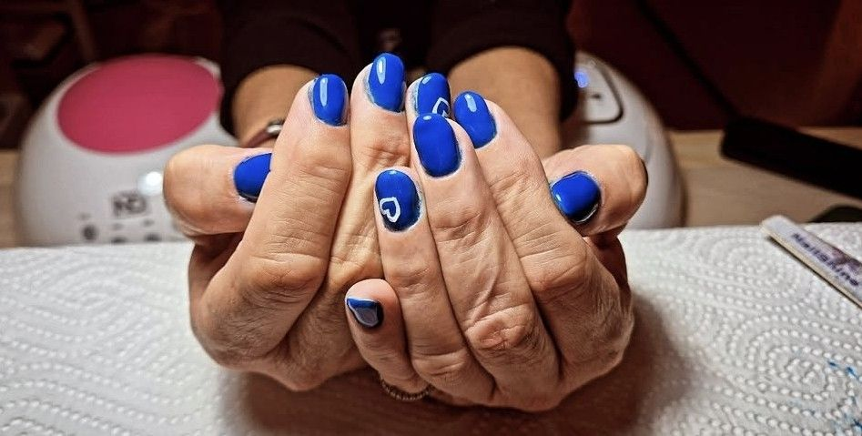
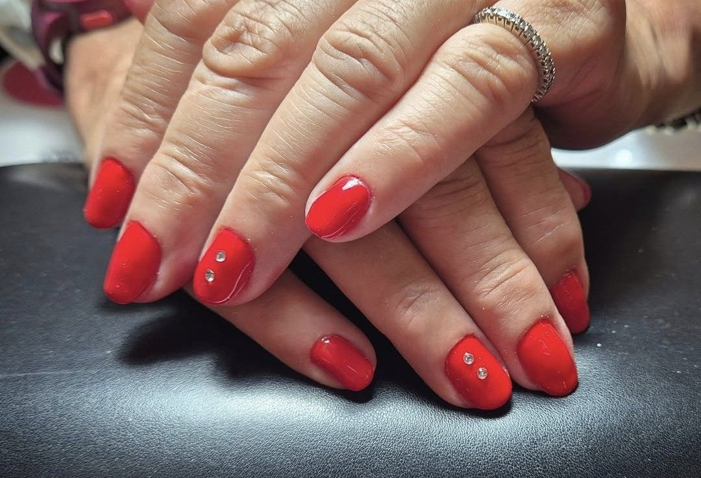
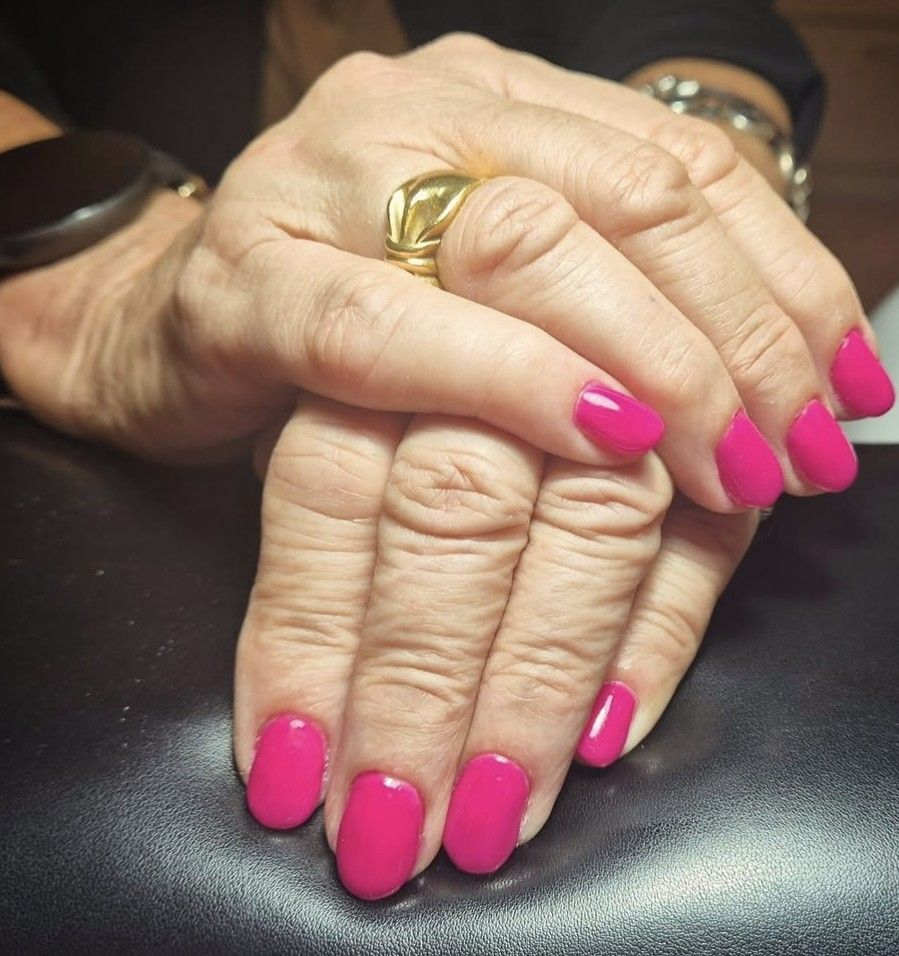
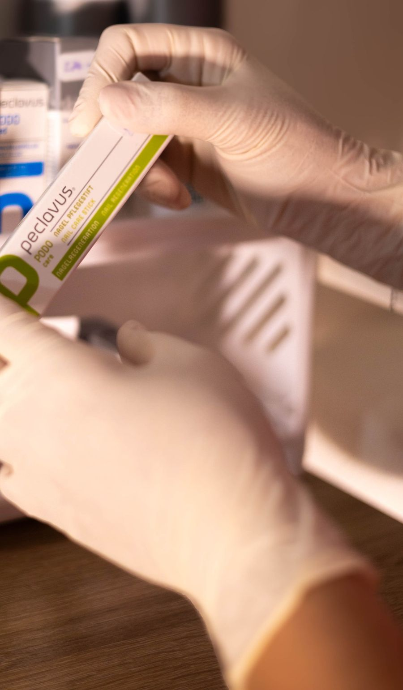
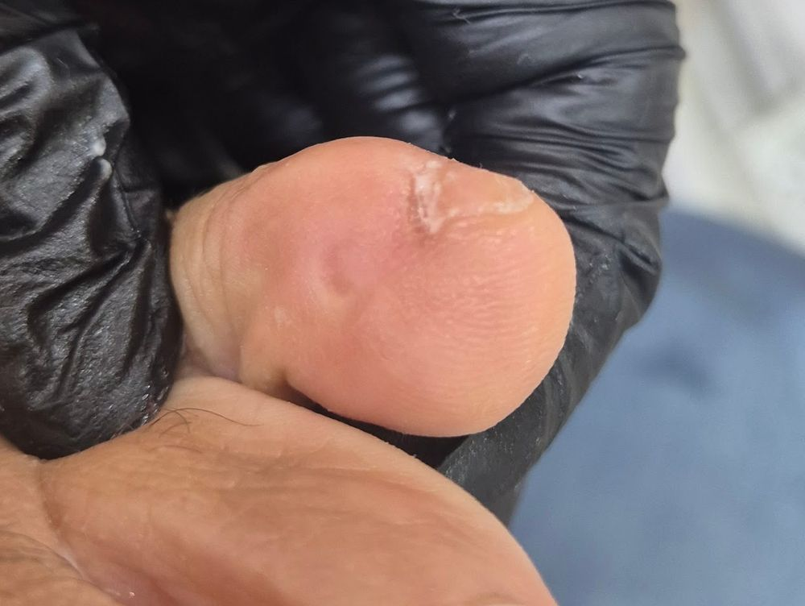
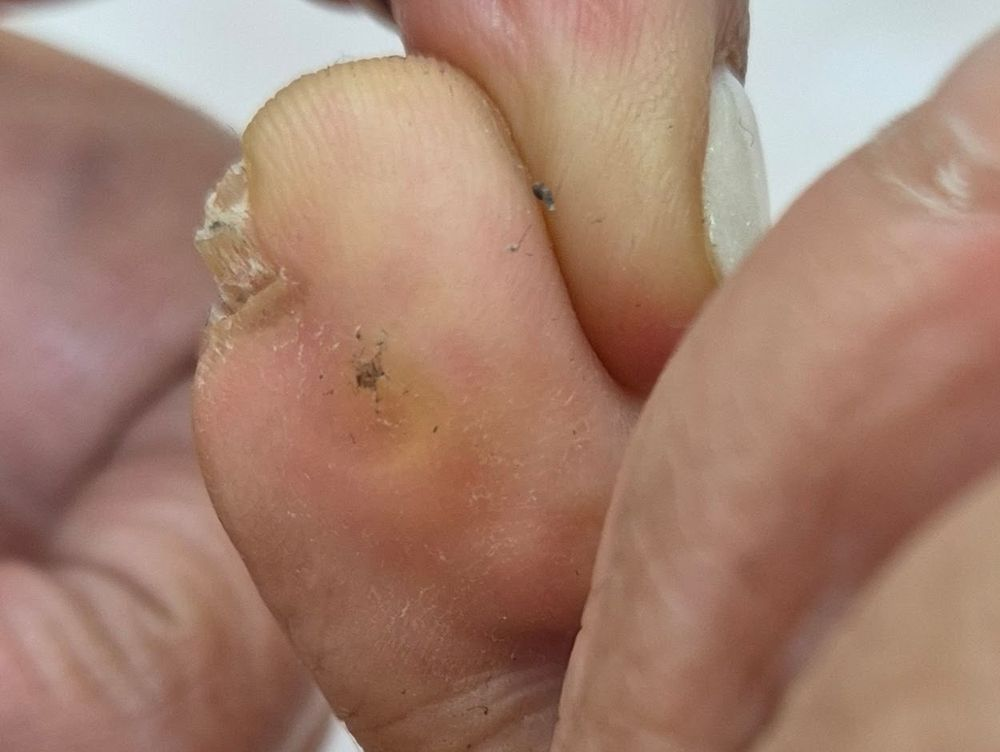

5.0
29 ביקורות בגוגלGoogle reviews
קונספט לדוגמה שנבנה עבור מאיה קויפמן · זה אינו האתר הרשמי של העסקA sample concept built for Maya Koifman · This is not the business’s official website
מניקור ופדיקור, בידיים עדינותManicure & pedicure, with gentle hands
שבטי ישראל 17, חיפה17 Shivtei Israel St, Haifa





כפפות, כלים נקיים, והסבר לפני כל שלב.Gloves, clean tools, and an explanation before every step.
5.0
29 ביקורות בגוגלGoogle reviews
„איכות העבודה והניקיון הם חלק ממנה”
“The quality of the work and the cleanliness are part of her”
ציפורניים אמיתיות, כמו שצולמו.Real nails, just as they were photographed.
פדיקור · שתי תמונות אמיתיות מהעבודה של מאיה. גוררים את הפצירה.Pedicure · two real photos from Maya’s work. Drag the nail file.


בוחרים טיפול ויום, וההודעה נכתבת לבד.Pick a treatment and a day, and the message writes itself.
5.029 ביקורות בגוגל29 Google reviews
לפני מאיה, אף פעם לא עשיתי טיפול. חששתי שזה לא יתרום לי וטעיתי. מאז שמאיה התחילה לטפל בי אני מרגיש בנוח עם הרגליים שלי. היא יסודית מאוד וגם מקפידה על כל כללי ההיגיינה. מאוד ממליץ
Before Maya, I had never had a treatment. I worried it wouldn’t do anything for me, and I was wrong. Since Maya started treating me I feel comfortable with my feet. She is very thorough and keeps to every hygiene rule. Highly recommend.
מאיה הגיעה אלי הביתה לטיפול בציפורן חודרנית מקצועית נעימה מסבירה לפני כל דבר נותנת תחושה טובה ורואים שהיא מבינה את מה שהיא עושה וזה חשוב…
Maya came to my home to treat an ingrown nail. Professional, pleasant, explains before everything, gives you a good feeling, and you can see she understands what she’s doing, and that matters.
אני מכירה את מאיה כבר מספר שנים. איכות העבודה והניקיון הם חלק ממנה שהיא מביאה לכל מקצוע. היא מקצועית, איכותית ומעל הכל, ניקיון וסטריליות מובטחת…
I’ve known Maya for several years. The quality of the work and the cleanliness are part of her, and she brings them to every job. She is professional, does quality work, and above all, cleanliness and sterility are assured…
מקצועית אני עושה אצלה פדיקור כבר המון זמן. ממש שיקמה לי את הרגל
Professional. I’ve been having pedicures with her for a long time. She really restored my foot.
מקצוענית אמיתית נעימה רגישה ממליצה בחום
A true professional, pleasant and sensitive. Warmly recommended.
חיפה. השעות, המפה והטלפון.Haifa. Hours, map and phone.
כן. אחת הביקורות בגוגל מספרת על טיפול כזה.Yes. One of her Google reviews describes such a treatment.
באחת הביקורות מסופר שמאיה הגיעה לטיפול בבית. הכי פשוט לשאול אותה בוואטסאפ.One review tells of Maya coming for a treatment at home. The simplest way is to ask her on WhatsApp.
ראשון עד חמישי 8:30–17:30, שישי 9:00–13:30. בשבת סגור.Sunday to Thursday 8:30–17:30, Friday 9:00–13:30. Closed on Saturday.